Raven · 63 days
Frank
Fractured humerus. Released.
Rescues
Tap any bird to read the full story.
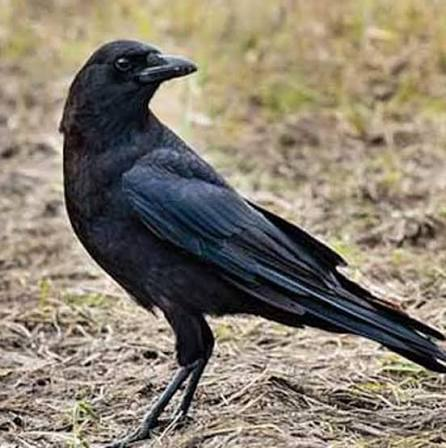
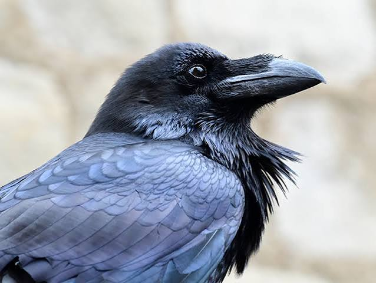
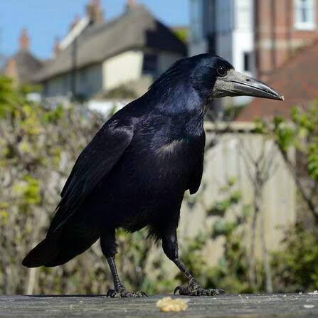
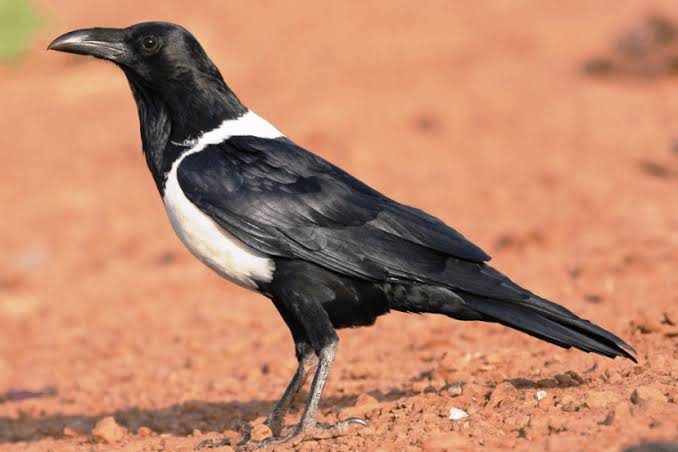
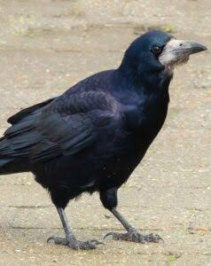

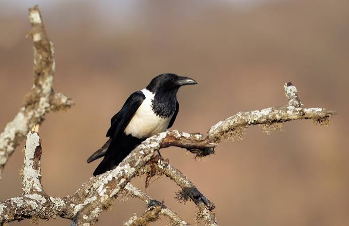
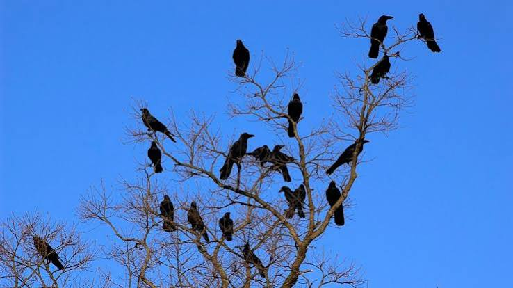
Raven · 63 days
Fractured humerus. Released.

Crow · 47 days
Nestling. Released.

Raven · 98 days
Lead poisoning. Released.
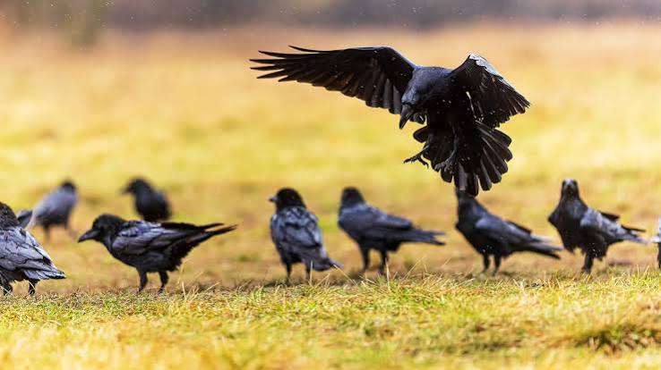
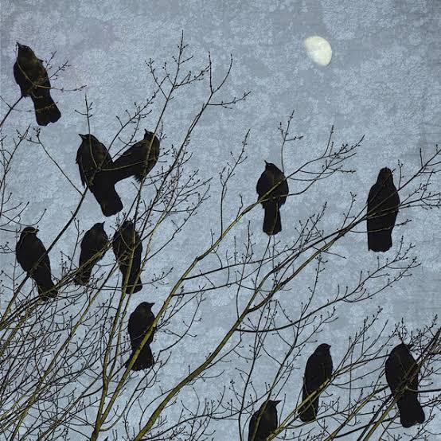
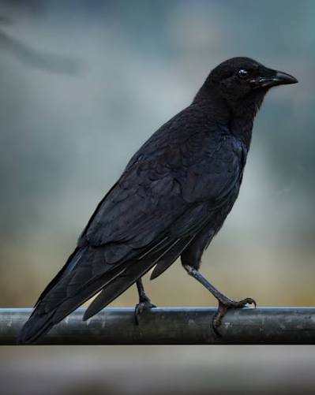
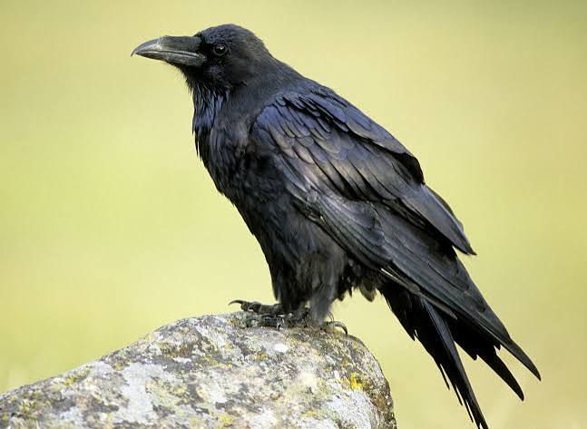
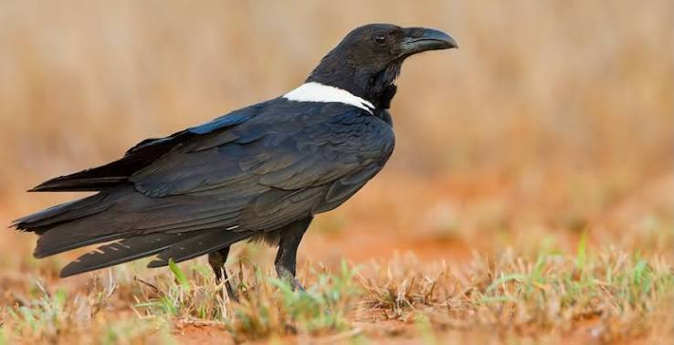